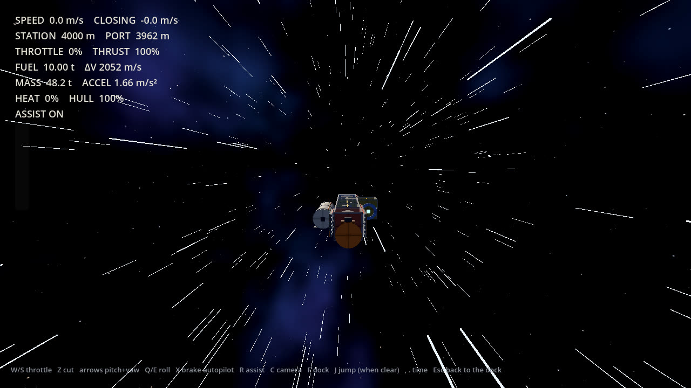

Build your ship. Haul the freight. Push the frontier.
Far Haul is a first-person freight, ship-building and exploration game. You own a small, secondhand ship, take contracts, and move goods between worlds. This page shows what you can play today and what is still to come.
One portable file for 64-bit Windows, about 42 MB zipped. Unzip it anywhere and run FarHaul.exe; nothing is installed. Needs a mouse and keyboard.
- Version
- 0.1.0, prototype
- You can
- Build and name a ship, take freight from a living economy, fly local runs and dock, fit an FTL drive and jump between stars, walk your ship and the port you are berthed at, take work from people at the bar, land on moons and work outside in a suit
- Not yet
- Planets with air, space walks, crew, combat

The game, and where it is today
Far Haul is about owning a working spaceship. The ship is a place you walk through, and freight is how you pay for it.
You start as an independent operator with a cheap ship and enough money to keep it flying. You take contracts, load containers, work out whether a job is worth the fuel, and run goods between established worlds. Over time you build bigger, buy range, and head out past the end of the charts, where there is no repair yard, no fuel depot and nobody to call. The farther you go, the less is there to help you.
What you can play today: design a ship from modules and check that it works, take freight from a simulated economy of eighteen systems, and fly it. You start with a sublight ship, so your first jobs are runs between the port, fuel depot, moon and belt of your own system, flown by hand or left to the autopilot. Save up for an FTL drive and the other systems open up, with a jump that takes you there without a cut. You can also get up from the helm and walk the ship while it flies. When you are berthed you are on your feet in the port, walking between the freight office, the fuel desk, the shipyard and the bar, where people ask for rush jobs, passage and sealed crates. Fit lander legs and every moon opens up: a base and a mining camp to land at, missions to do on foot in a suit, and an outpost, an ice mine and a deep crater to fly out to. Space walks are next.
Build order
- Ship builderPlayable now
- FlightPlayable now, with star jumps
- Walking insideShips and ports, rough
- Landing and exploringMoons and suit work, rough
- Tethered space walksNext: repair the outside
Area by area
| Area | What the game will be | Today | Status |
|---|---|---|---|
| Ship building | Ships assembled from physical modules: cockpit, hull, cargo holds, tanks, engines, radiators. Every compartment exists in the world. Balance, power, heat and thrust all matter. | A 3 m grid builder. Parts snap together at doors and mounts. Live checks for sealed hull, airlock, power, cooling, thrust-to-weight, centre of mass and an FTL drive. Undo, redo, autosave. | Playable |
| Menus, saves and ports | A proper start: pick who you are and where you begin, keep several games, and always return to the last place you stood. | New game with name, species, difficulty and starting system. Five save slots. You arrive on foot in a port's concourse, with desks for freight, fuel and repairs, the shipyard and a bar; a moon base pad has a domed hab with a survey lab and suit store, and a mining camp has the foreman's hut. The old station menu is still there at the terminal. Settings cover graphics quality, display, volume and mouse. Species gives no bonuses. | Playable |
| Known space | Eighteen systems from the five home worlds out to the last settlement at Lastlight, joined by trade routes and named corridors. Every place needs something from somewhere else. | Written as data and now running: five species, eighteen systems, nineteen routes. The economy simulation uses all of it, and the new game screen reads it for species and starting systems. | Playable |
| Interiors | Cramped, practical, lived-in. Cabins, galleys, engine rooms and cockpits that look like they were built to do a job. | Each part has its own fitted interior: cockpit seats and controls, a reactor room, crew quarters with bunks and a galley, an airlock with suit lockers. You can see them from the builder camera. | Rough |
| Freight and contracts | Cargo in standard containers, with real mass, value and handling needs. Demand that follows what each place makes and uses. | A contract board with live freight, deadlines and pay. You load, deliver and get paid. Sublight ships get in-system runs between the port, depot, moon and belt; interstellar freight needs an FTL drive. The hold is limited by what the tank can lift. People at the bar, dispatch and the camp foreman offer rush jobs, passengers and sealed crates, and your standing with them grows with good work. | Playable |
| Flying | Fly from the pilot seat. Fuel, range and an off-centre thrust line that costs manoeuvring propellant. | Free flight from the dock, flown local runs (burn, flip, brake, time compression, docking at the far station) and star jumps with a spool-up, streaking stars, a flash and a slowdown. Fuel, heat, power and hull damage all count. You hear the engine and lift jets through the hull. | Rough |
| Walking the ship | Leave the seat and walk the corridors while underway. A longer ship means a longer walk to engineering. | Press G at the helm to get up and walk in first person, with deck gravity. Walls, doorways, furniture and loaded containers block you. Ladder shafts change deck, and the airlock lets you off at a berth. The ship flies on as you left it. Ports, the moon hab and the camp hut are walkable too. | Rough |
| Landing and exploring | Land on rocky worlds and moons, then explore by ship, rover and on foot. | Every system has a moon (grey, ice, dust or heavy, each with its own gravity) with a base pad and a mining camp you land on by hand. Lander legs open surface-only freight that pays more, and runs start by lifting off the surface. In a suit you have air to watch and kit to buy (bigger tanks, boots, a scanner, suit jets), timed missions to do, crates to carry at the camp, and samples, salvage, ice and rare crystals to find. Each moon also has an abandoned outpost, an ice mine and a deep glass crater, with boulders and slopes to land around. | Rough |
| Space walks and repair | Go out through the airlock on a tether to fix radiators, engines and hull damage. | Airlocks exist and the builder checks for one. Nothing outside the hull yet. | Planned |
| Living economy | Freight demand that comes from what places produce and need. Frontier outposts that grow because you supplied them. | A simulation of production, stock, orders and shipping carriers across all eighteen systems runs alongside you. Easy, Normal and Hard change your costs and pay, not the world; Hard sits close to insolvency. Frontier growth is not built. | Rough |
| Manufacturers and wear | Parts from companies with recognisable engineering habits. Components wear and fail where you can see it. | One generic part for each job. Hull damage stays with the ship until you pay a repair desk, and prices differ from port to port. | Planned |
| Crew, passengers, salvage, combat | People who live aboard, wrecks worth boarding, and danger that is a cost to avoid rather than the main event. | Passengers ride along in spare berths. Wrecks and an abandoned outpost on the moons can be stripped for salvage. No crew or combat yet. | Rough |
Screenshots
All taken from the game itself. Select any image to see it full size.
Help
You start with a ready-made sublight hauler and 110,000 to 220,000 credits, depending on difficulty. Take local freight, save for an FTL drive, then go further.
Your first ship
- Download and unzip the game, run FarHaul.exe, then choose New game. Pick a name, race, difficulty, starting world and save slot, then Begin. Later, use Continue or Load game to return.
- You arrive on foot in the port's concourse. Walk up to a desk and press E to use it. The Shipyard desk opens the ship builder. T opens the station terminal, which has every action as a menu.
- Look at the ship. Click a part in the palette on the left, then click next to the ship to place it. Green means it fits. Red tells you why not.
- Watch the power, cooling and cargo meters and the warnings on the right. Each warning says what is missing.
- Use Cargo preview to fill the hold and see the ship loaded. This only changes how the ship looks and weighs. It does not buy or sell anything.
- Type a name in Ship name. Press S to save. Your game also autosaves. Leave shipyard (Esc) saves and takes you back to the concourse.
- At the Freight office, take a run and load it. A sublight ship sees runs inside its own system. Choose Depart on autopilot to have it flown at the textbook fuel cost, or Fly the run yourself. The people at the bar have other work: rush jobs, passengers and sealed crates.
- Fit lander legs to land on a moon. At the base's hab, the suit store sells kit and dispatch posts missions; the airlock desk suits you up and puts you outside.
- Fit an FTL drive in the shipyard (about 48,000 cr with its radiator) to take freight to other systems. At the freight office or the gate, Fly the jump undocks you and lets you press J once you are clear.
What makes a ship valid
- A cockpit to fly from.
- At least one engine pointing aft.
- A sealed hull. Cyan rings mark doorways that open onto space; cap them with a module.
- An airlock, so the crew can get in and out.
- Enough power for everything that draws it.
- Enough cooling for the heat you make.
- Enough thrust for the loaded weight. The stats panel shows thrust-to-weight empty and loaded.
- An FTL drive, if the freight crosses between systems.
Controls: shipyard
| Place a part | Left click |
|---|---|
| Remove a part | Shift + Left click |
| Rotate the part | R |
| Choose a part | 1 to 9, 0, [ ], or click it |
| Build deck down or up | Q / E |
| Undo and redo | Ctrl + Z / Ctrl + Y |
| Orbit the camera | Right-drag |
| Zoom | Mouse wheel |
| Pan | Middle-drag |
| Frame the whole ship | F |
| Hide the decks above | H |
| Save, clear | S, C |
| Leave the shipyard | Esc |
| Mute sound | M |
| Show the help text | F1 |
Controls: flying
| Throttle up, down, cut | W / S / Z |
|---|---|
| Pitch and yaw | Arrow keys |
| Roll | Q / E |
| Brake autopilot | X |
| Rotation assist | R |
| Camera | C |
| Time compression | , / . |
| Dock | F, or Esc to autopilot in |
| Engage the FTL drive | J, when clear of the station and cool |
| Get up from the helm | G |
| Lift jets, hover hold (on a moon) | Space, H |
| Autoland on a beacon pad, or lift off on auto | Esc |
| Shut down on the pad | F |
Controls: on foot
| Walk | W A S D, Shift to run |
|---|---|
| Look | Mouse, or arrow keys |
| Take the helm, climb a ladder, leave by the airlock, use a desk | E |
| Station terminal (in a port) | T |
| Free the mouse | Esc, click to look again |
Controls: in a suit
| Walk, run | W A S D, Shift (uses air faster) |
|---|---|
| Jump, suit jets | Space, hold it in the air for jets |
| Take a find, set a beacon, pick up or drop a crate | E (hold it on a drill) |
| Back aboard, at the hatch | Q, or E |
Questions
Where is my game saved?
In a Far Haul saves folder next to FarHaul.exe, automatically, every time you change something. Copy that folder with the exe to take your games to another computer. If the exe sits somewhere it cannot write (such as Program Files), saves go to your AppData folder instead; the Load game screen shows where.
I cannot place a part. Why?
Move the cursor over the ship and read the red message under it. The usual reasons are overlapping another module, no matching door or mount on the neighbouring part, or not enough credits.
Why can I only see a few jobs?
Without an FTL drive your ship only sees runs inside its own system, and only ones its tank can lift: the hold is limited by fuel, so a long hop means a lighter load. Fit an FTL drive and the interstellar board opens up. The people at the bar have more work than the board shows, and lander legs open surface runs that pay more.
There is no sound.
Check the volume sliders in Settings on the title screen, and press M in the shipyard to check sound is not muted there.
It runs slowly.
Open Settings from the title screen and set Graphics quality to Low: it turns off shadows and anti-aliasing. If the game will not start at all, your graphics drivers may be too old for Vulkan; the game then falls back to a simpler renderer.
Does it run on Mac, Linux, a phone or in a browser?
Not at the moment. Far Haul is built for Windows PCs with a mouse and keyboard. The early browser version has been retired.
I ran out of air outside.
The base or camp crew drag you back aboard and bill you 800 cr, and any mission you held fails. Watch the AIR readout top left: running uses air half as fast again, and it warns you below 20%. Bigger tanks at a hab's suit store give you up to 35 minutes.
How do I get to another star?
Fit an FTL drive in the shipyard, accept an interstellar contract, and choose Fly the jump at the freight office. Get 3 km clear of the station, slow down and let the engines cool, then press J. A jump costs fuel, fees and days of crew wages, and the world keeps moving while you travel.
About Far Haul
A game about owning a spacecraft and being free to go somewhere.
Not a magical ship, and not a legendary warship. A machine you designed, paid for, patched together, overloaded and eventually know well enough to hear when something is wrong. There is no chosen hero and no galaxy to save. There is always another shipment, another settlement, and another star past the edge of the chart.
What it is built around
- Function over formShips are boxes, frames, tanks, engines and radiators. A strange-looking ship that obeys the engineering is a perfectly good ship.
- The ship is the placeEvery compartment is a real room. Cockpit, hold and engine room all exist, and walking between them takes time.
- Freight is the economyCivilisation needs things moved. You earn by moving them, and what you earn becomes a better ship.
- The frontier gets thinPast the core worlds there is less help. Eventually there is no repair yard, no fuel depot, and no rescue.
Known space
Humans, Kesh, Ilyan, Vey and Orun each have a home system and an engineering tradition. Trade has mixed them for generations, so a Kesh captain at a human-built terminal is ordinary. Your species shapes where you come from, not what you can do. The core is crowded and well supplied. Further out there are fewer ports, fewer repairs and less rescue, until Lastlight, where ordinary commerce runs out.
- Humans
- Sol. Modular, repairable, improvised. Many makers and standards.
- Kesh
- Keshar. Heavy, redundant, very durable. High gravity.
- Ilyan
- Ilos. Light, efficient, precise. Low gravity, great engines.
- Vey
- Veyara. Water, life support and biotechnology. Semi-aquatic.
- Orun
- Orun. Compact, accessible machinery and thermal control. Communal and underground.
The prototype
- Version
- 0.1.0, prototype
- Built with
- Godot 4.4, written in GDScript, using the Forward+ renderer (Vulkan) on Windows.
- Art and sound
- The textures, sky, logo and every sound effect (engines, footsteps, room tone, the suit, the jump) are generated in code. The theme song is a custom track. The intro video is a placeholder.
- Placeholders
- Prices, part stats and the intro video will all change.
- Source
- github.com/benjaminarthurt/FarHaul